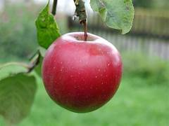

Helps keep gut healthy supports a healthy immune system lowers high cholesterol aids digestion stimulate weight loss balance blood sugar leves strengthen immunity.
the red delicious hails from lowa.it has a mild sweetness with a crisp,juicy texture and tough skin. the red delicious is best easten on its own or chopped in salads.
The granny smith has a thick and shiny green exterior with a puckering sour taste.its firm,crisp and juice texture is ideal for baking into pies and sauces
Motorcycle is a road transport,motorcycle are often called the bikes,it is a two wheeled vahicle.
it has a comfortable seat it has gears horn headinlight,taillight.